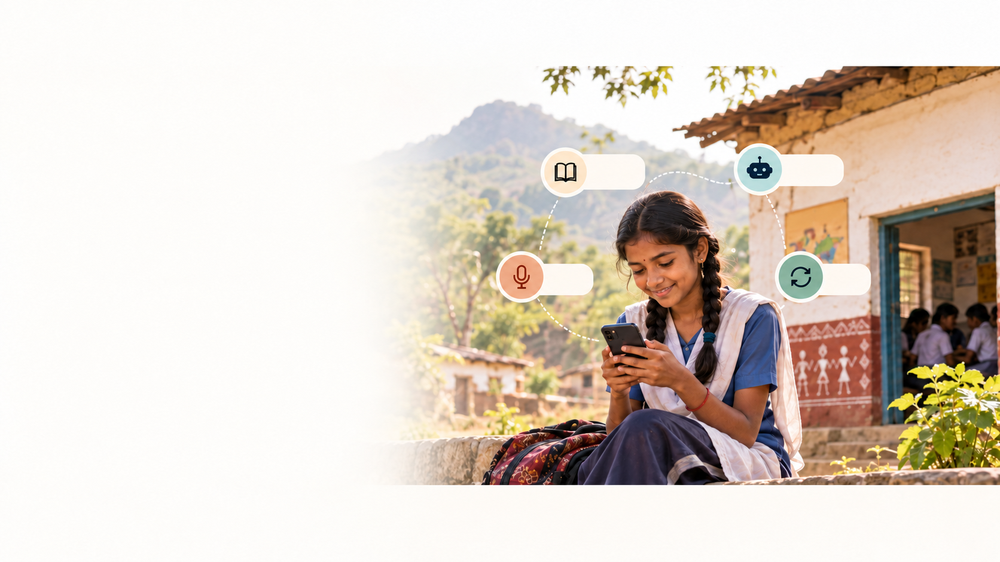
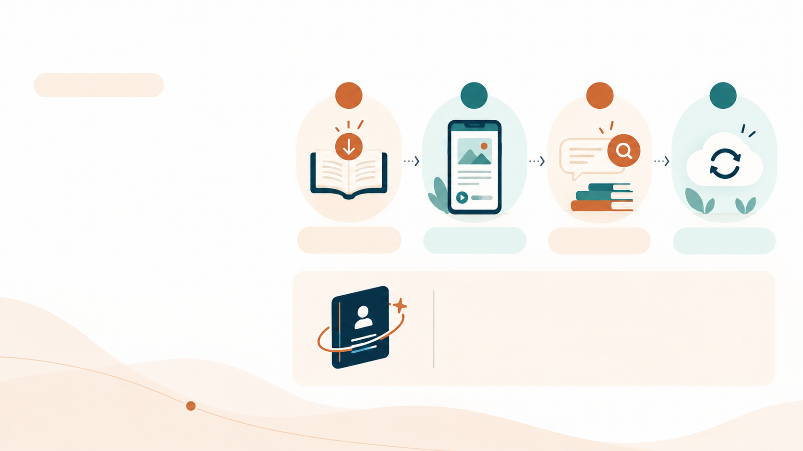
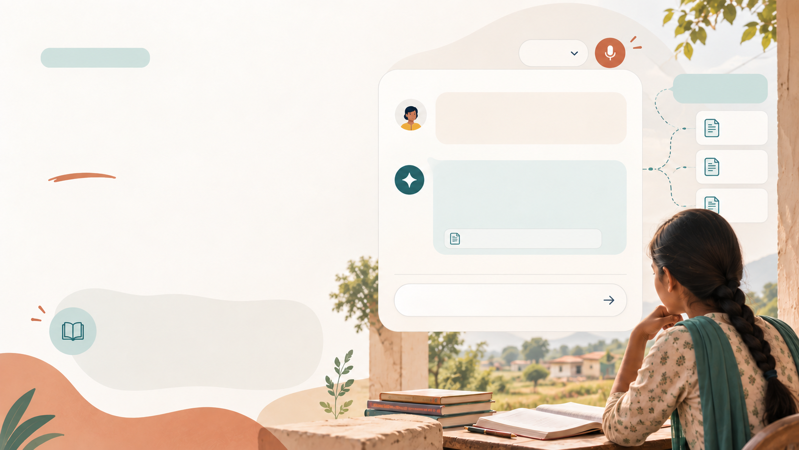
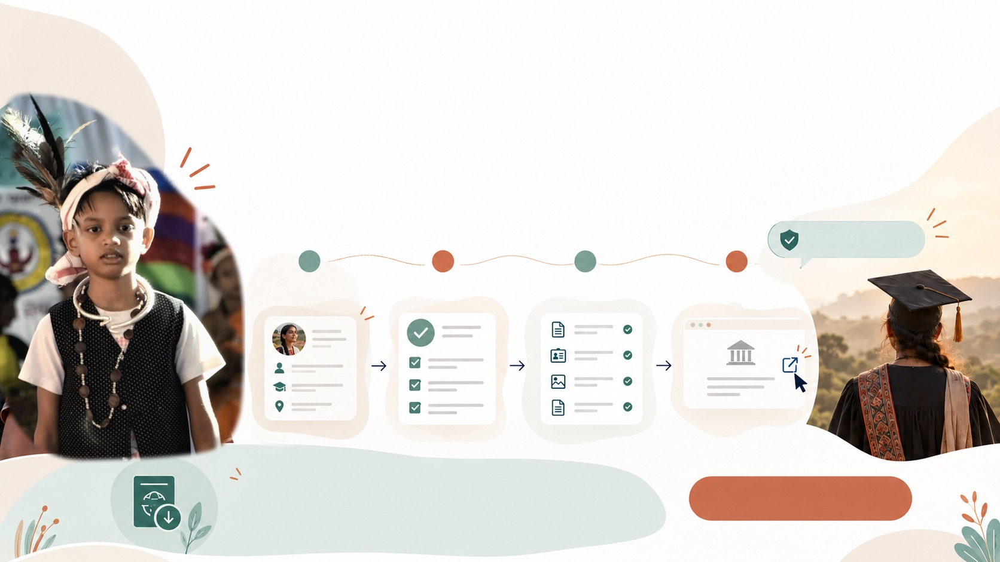
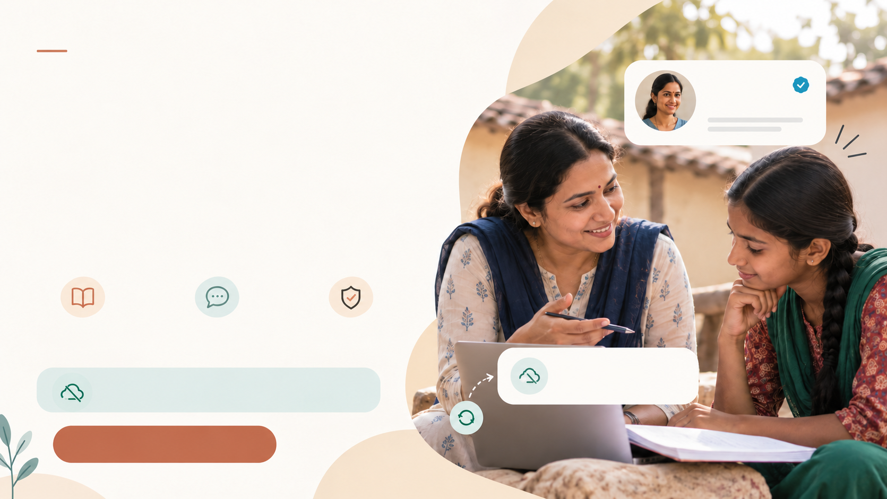
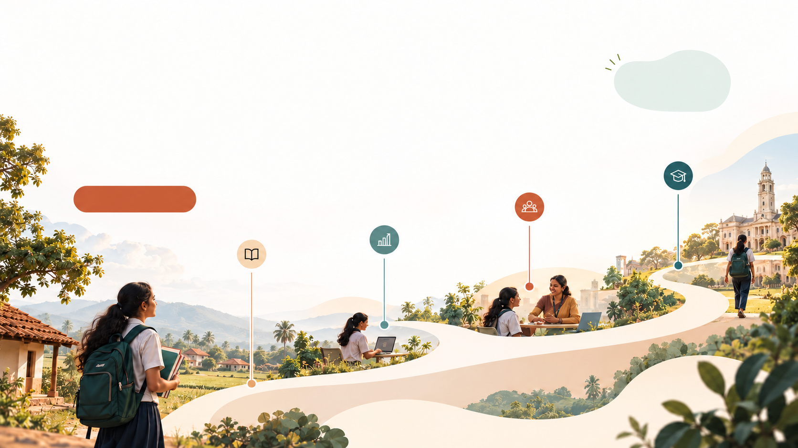

Learning should continue, even when the internet doesn’t.
ASTRA keeps lessons, progress and guidance available offline for rural and tribal students.
- Offline lessons
- Local AI
- Voice
- Sync
- Offline-first
- Local-language support
- Community-powered guidance

A learning system built for real-world connectivity
ASTRA saves the student’s learning state locally, uses nearby resources when needed, and syncs only when a connection returns.
- 1Download once
- 2Learn offline
- 3Ask locally
- 4Sync later
Learning State Passport
Progress, pending doubts and the next best action travel with the student across connectivity gaps.

Progress should open the next door.
ASTRA connects a student’s learning state with the guidance they need next:
a revision plan, a verified scholarship, a trusted mentor or a clear career pathway.
Learning signal
Weak topic detected
Right support
Practice, mentor or explanation
Opportunity match
Scholarship or career pathway

Turn every doubt into a next step.
Students can ask in Hindi, English or a regional language. ASTRA searches downloaded study material first, then explains the answer in simple language.
Grounded answers, even without cloud access
RAG + local AI uses the student’s downloaded syllabus instead of guessing.
Newton’s third law simple language mein samjhao.
Jab tum wall ko push karte ho, wall bhi tumhe opposite direction mein push karti hai.
Physics · Chapter 3 · Local study packAsk a follow-upChapter 3Chemistry
NotesMaths
Syllabus

Make every eligible
opportunity easier to find.
ASTRA turns scattered scholarship information into a simple, verified path:
eligibility, required documents, deadline and official application link.
- 1Your profile
- 2Eligibility match
- 3Document checklist
- 4Official application
Opportunity Passport
A student can save scholarship progress offline and
continue the application when connectivity returns.

The right mentor can change the next step.
ASTRA connects students with verified teachers, guest faculty, alumni and trained female mentors who understand their language, subject and context.
Mentor matching that feels personal
Unresolved doubts become mentor requests,
even when the student is offline.

A clearer path from learning to possibility.
ASTRA helps students connect what they are learning today with the choices they can make tomorrow.
the student
- DiscoverUnderstand your
interests - PrepareBuild the right
skills - ConnectFind mentors and
opportunities - Move forwardChoose your next step